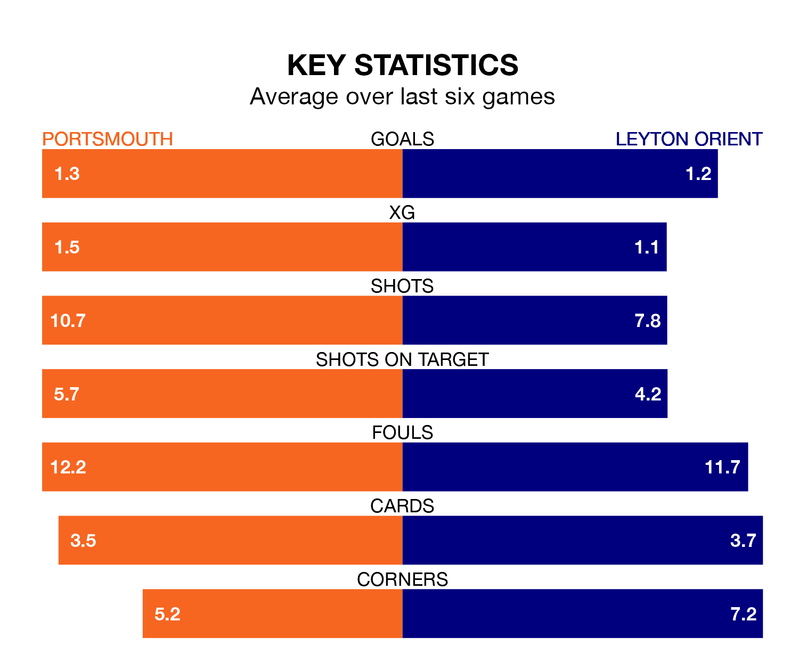

Portsmouth host Leyton Orient in Saturday's match at Fratton Park looking to bounce back from defeat last time out in EFL League One.
Pompey, who sit top of the league after 26 games, fell to a 2-1 away defeat to Cheltenham Town on January 6.
They face an Orient side who picked up a win in their last match, a 2-0 victory against Cambridge United, and who sit 13th in the table.
With Will Norris between the sticks, Portsmouth can rely on one of the league's safest pair of hands. He has kept 12 clean sheets in his 26 appearances this season, and no 'keeper has prevented the opposition scoring more often in EFL League One.
In Orient's net, Samuel Howes has one clean sheet in three games. He has conceded a goal every 45 minutes, nearly three times as often as the 117 minutes between goals for Norris.
With 42 goals in 26 games so far this season, Pompey are scoring more than average in the league with 1.6 goals per game. And they are conceding fewer than average, letting in 22 goals at a rate of 0.8 per game.
The away team, meanwhile, are below average scorers, with 1.0 goal per game, compared to a league average of 1.3. They have conceded 1.2 goals per game.
In the last 10 years, Portsmouth and Orient have played each other on six occasions. Portsmouth won four of them and Orient two.
On average, Pompey scored 1.8 goals and Orient 1.0 in those matches.
Their last meeting was on November 7, when Portsmouth won 2-1 away.
The hosts are in mixed form in EFL League One, with two wins and two draws from their last six games.
With three wins and a draw over that period, Orient's form is slightly better – they have taken 10 points from 18, compared to Portsmouth's eight.
Updated: 15:34, 08/01/24